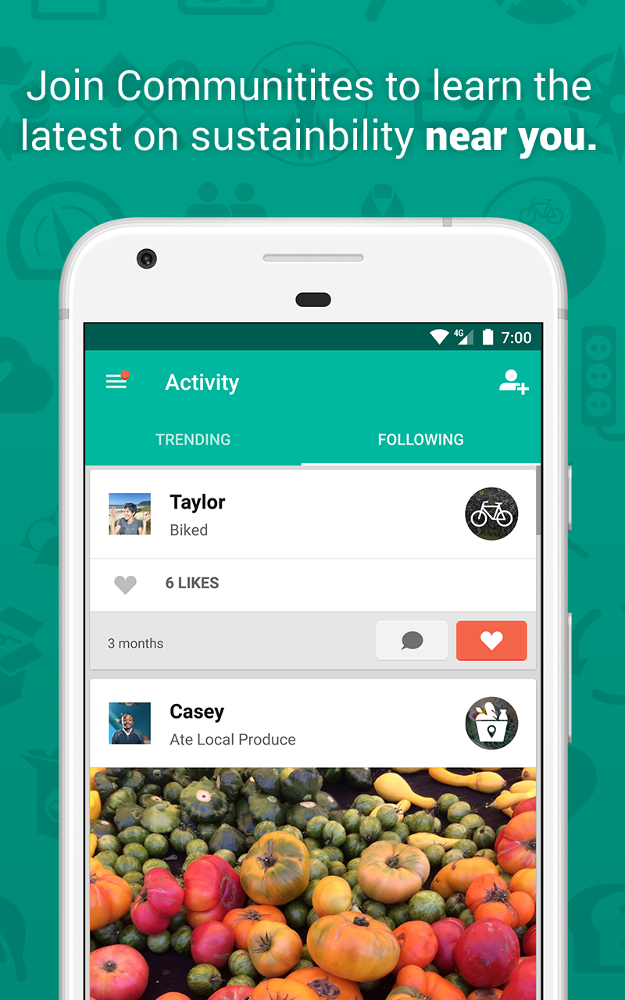
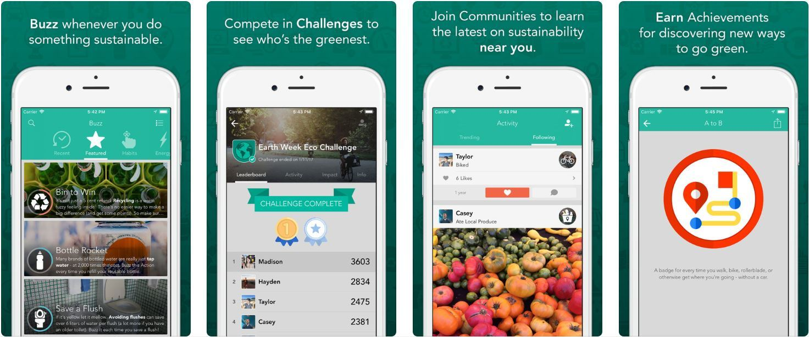

JouleBug is a mobile application designed to inspire and motivate users to adopt sustainable habits and behaviors in their daily lives. Through gamification and challenges, JouleBug encourages users to engage in eco-friendly actions such as conserving energy, reducing waste, and using alternative transportation. The app provides educational resources, tracks users' progress, and fosters community engagement by connecting users with like-minded individuals. With its focus on making sustainability fun and accessible, JouleBug empowers users to make a positive impact on the environment and contribute to a more sustainable future.

It provide features such as:
1.Sustainable Habits: JouleBug encourages users to adopt sustainable habits and behaviors by offering challenges and rewards for actions like recycling, reducing energy consumption, conserving water, and more.
2.Gamification: The app gamifies sustainability, turning eco-friendly actions into fun challenges that users can complete individually or with friends, fostering a sense of competition and motivation.
3.Education and Tips: JouleBug provides educational resources and tips to help users understand the environmental impact of their daily choices and learn how to make more sustainable decisions in their lives.
4.Community Engagement: Users can join communities and connect with like-minded individuals to share tips, experiences, and inspiration for living a more sustainable lifestyle.
5.Tracking and Progress: JouleBug allows users to track their progress and see the environmental impact of their actions in terms of energy saved, carbon emissions reduced, water conserved, and more, providing tangible feedback and motivation.
6.Social Sharing: Users can share their achievements and eco-friendly activities on social media platforms, spreading awareness and inspiring others to join the sustainability movement.
 